I build AI workflows that replace repetitive work — n8n pipelines, Zapier automations, Claude-powered agents, and Notion systems. Clients save 10–40 hours a week. Based in Manila, working globally.
Hiring James means your team stops doing repetitive work manually. He maps your process, picks the right tools, builds the automation, and hands it over — running and documented.
He's shipped a production-grade AI support router in n8n (16 nodes, 3 AI providers, circuit-breaker resilience), a React + Supabase booking app, and an offline Flutter AI assistant — all from scratch. He doesn't just configure tools, he engineers systems.
These are the exact workflows I build for clients. Each one replaces hours of manual work with a system that runs itself.
I'm James Earl Medrano, a BS IT graduate from Pamantasan ng Lungsod ng Maynila with expertise spanning AI operations, IT infrastructure, and financial technology.
My career spans cybersecurity environments, international financial IT operations, and cutting-edge LLM development — a uniquely versatile skill set for modern tech roles.
Driven by the intersection of AI and practical IT — building systems that are both intelligent and reliable, from Manila to wherever the work takes me.
📌 Current status: Left Innodata Knowledge Services in May 2026 after contract completion. Actively interviewing for AI operations, LLM, and IT roles. Available to start immediately.
A full-stack booking platform for tennis courts across Metro Manila. Browse 18 real courts on an interactive map, book a 1-hour slot, and get AI-powered playing tips, smart price alerts, and personalized court recommendations — all in Filipino or English.
A player opens the app, browses or searches courts by city, surface, or distance, taps a court to see live time-slot availability, picks a date and hour, adds optional equipment, then confirms the booking — all backed by Supabase auth and row-level security so each user only ever sees and manages their own reservations.
// Colors pulled directly from the live deployed app, not approximated
The hardest part wasn't the tech — it was designing for real-world messiness: courts with inconsistent data, users who book then no-show, and a map that needs to feel fast on low-end Android devices. I learned that Supabase row-level security needs to be planned from day one (retrofitting it is painful), and that shipping a real live demo beats a perfect prototype every time. I'd add server-side caching for court availability next.
A Flutter navigation app built for Filipino motorcycle riders on Grab, Angkas, FoodPanda, JoyRide, MoveIt, and Lalamove — fully offline-capable maps, a 3-tier AI assistant, hands-free voice commands, a trip-worth fare estimator, and live flood alerts, all built on a ₱0 budget using free and open-source tools.
A rider opens the app to a live map with weather and flood markers, then searches a destination or taps the mic for a voice command. From there it's turn-by-turn navigation with flood-zone warnings, with the AI assistant on hand for anything about routes, traffic rules, or earnings — and the fare estimator ready before accepting a trip, to confirm it's actually worth taking.
// Colors pulled directly from malate_colors.dart in the real source code
Building a 3-tier AI fallback chain from scratch taught me that graceful degradation is a first-class feature, not an afterthought. Compressing 2.1GB of offline map data to 280MB required deep work on tile pyramid math and SQLite optimization — skills I didn't expect to need for an AI project. The biggest lesson: users in low-signal areas don't care about AI sophistication, they care about reliability. That constraint made the architecture stronger.
An offline-first AI co-pilot for Filipino motorcycle ride-hailing riders — built solo on a ₱0 budget, with a three-tier AI brain that keeps answering even with no signal, in the rider’s own Taglish.
Motorcycle ride-hailing riders work long hours on thin margins — yet the tools they use are generic, English-first, and useless the moment the mobile signal drops (which, on Metro Manila roads, is often). There was no single app that could tell a rider whether a trip is even worth taking, track real earnings against fuel cost, warn about floods and checkpoints, and answer questions in the language they actually speak — all without burning data.
One Flutter app that puts the rider’s whole workday in their pocket and assumes the connection will fail. A live map with weather, a SULIT / PUWEDE NA / LUGI fare verdict before they commit to a trip, earnings & fuel tracking, one-tap hazard reporting that syncs when back online, ride-history hotspot analysis, one-tap SOS safety — and an AI assistant that routes each question to the cheapest tier that can answer it, falling all the way back to a model running on the phone itself.
This isn’t tool-configuration — it’s end-to-end product engineering with applied AI: model routing, on-device inference, offline sync, and localization, shipped as a 15-screen, ~14.5K-line app by one person for zero budget. The same three-tier routing pattern — knowledge base → cloud LLM → local fallback — is exactly how I design cost-aware AI automations for clients.
Real screens from the running app, plus a screen-recorded demo. Every shot below is the actual build — no mockups, no placeholders.
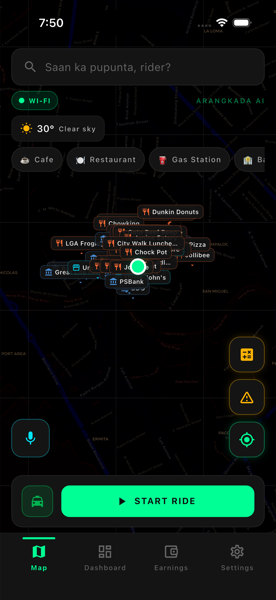
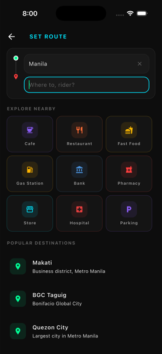
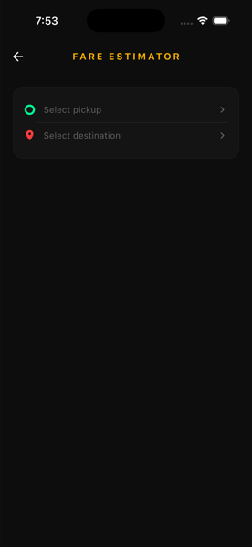
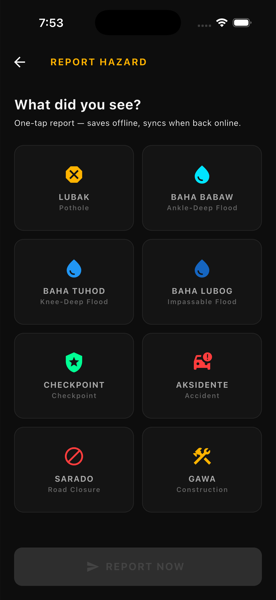
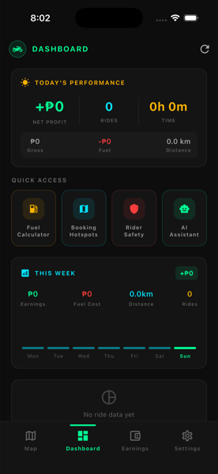
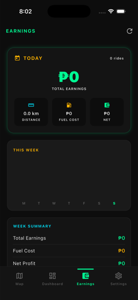
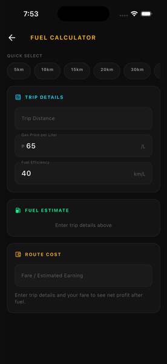
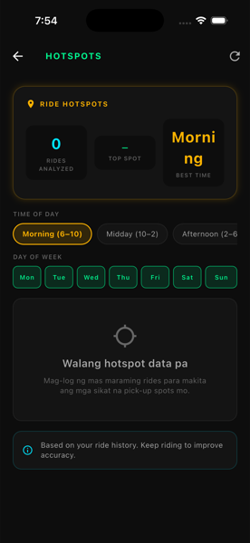
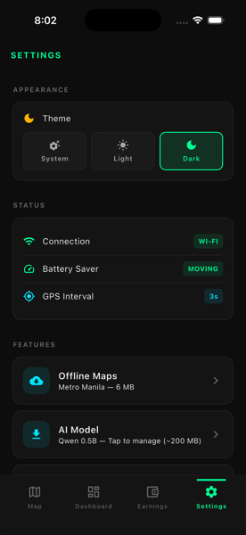
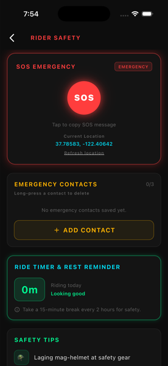
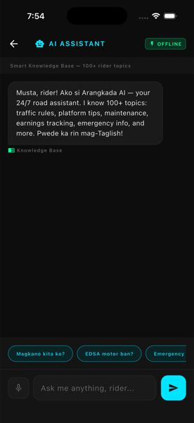
Don't take my word for it — describe any business problem below and get a real Claude-powered automation blueprint in seconds. This is the same kind of system I build for clients.
Every number below comes from actual projects — not estimates, not goals.
Every role left me with a principle I still use. Here they are, unfiltered.
VA clients hire by tool familiarity. Here's the documented proof behind the skills.
Production-grade n8n automations with real cost-routing logic, circuit-breaker resilience, and multi-provider LLM orchestration. Not tutorials — actual systems built from scratch.
An enterprise-grade customer support pipeline that automatically triages incoming emails, routes them to the cheapest AI model that can handle them, and fails over to a backup provider if the primary goes down — all without human intervention.
Every inbound email hits Claude Haiku first. It scores sentiment (calm/frustrated/angry/panicked), urgency (critical→low), and structural complexity. Cost: fractions of a cent.
Simple tickets (billing questions, plan inquiries) → Haiku at $1/M tokens. Complex/escalated tickets (API outages, multi-issue debugging) → Sonnet at $3/M tokens. Saves ~67% vs always-premium.
429 rate limits, 529 overloads, 5xx errors → automatic failover to OpenAI backup. Hard failures (400/401 auth) → dead-letter queue with alert. Zero dropped tickets.
The hardest engineering decision was the safe-expensive default — when the gateway is genuinely unsure about complexity, route to Sonnet anyway. A wrong cheap route costs more in human rework than a right expensive one. I also learned that circuit-breaker logic needs to live at the code layer, not the n8n retry layer, because you need to distinguish retryable transient errors (429, 529, 5xx) from hard failures (400/401 auth) that a failover won't fix. Building 23 unit tests before wiring the n8n canvas saved hours of debugging.
A production-grade lead qualification engine that ingests raw form submissions, uses an LLM at temperature 0 to extract firmographics and score intent, routes high-value leads instantly to a priority queue with a Slack alert — and self-heals: any failed submission is captured in a dead-letter store and automatically replayed every 15 minutes, with a bounded 3-attempt retry ceiling that escalates to a human before giving up. Zero leads are ever dropped.
Webhook receives the form → LLM scores it at temperature 0 → high-value leads hit the Priority Queue + Slack alert in under 3 seconds. Sales reps get notified before the prospect closes another tab.
Every error path — rate limits, malformed JSON, missing fields, out-of-range scores — gets an ERR_* triage tag and a safe 200 response. Not one lead is dropped. The dead-letter store captures everything.
A Cron fires every 15 minutes, fetches pending_retry rows, and re-runs the full scoring pipeline. 3-attempt ceiling with idempotent counter — if it can't recover after 3 tries, a human is escalated automatically.
The hardest part was the idempotent counter design — the retry_count is only committed at the terminal Airtable update nodes, never mid-flight. This means an interrupted replay run leaves the row's persisted count unchanged, so the next Cron poll retries cleanly without double-counting. I also learned to run the LLM at temperature 0 and validate every output field with typed ERR_* throws — because a scoring pipeline where the AI sometimes returns prose instead of JSON is worse than no pipeline at all.
A production RevOps pipeline that converts a completed Stripe payment into a fully provisioned Notion client portal — with idempotent duplicate protection, dual-provider AI failover, tier-banded onboarding paths, and a Slack Ops error lane. The customer is always served. Ops is always alerted. Nothing is ever silently dropped.
A deterministic provisioningId derived from the Stripe session ID is minted before any write. Notion is queried first — if the record exists, the Zap halts silently. Same session replayed 10 times = one client record. Always.
The AI call lives inside a fetch + try/catch Code node — not a native Zapier app step that hard-fails. OpenAI primary → Claude secondary → tier-default roadmap. The client always gets provisioned, even with both providers down.
Every Code node accumulates structured ERR_* triage codes. A trailing Slack Ops lane fires if any errors exist — with provisioning ID, tier, and exact codes. Ops knows what failed before the client even notices.
The most important architectural decision was moving the AI call inside a Code node using fetch + try/catch instead of using Zapier's native OpenAI app step. When a native app step fails in Zapier, the whole Zap crashes. Inside a Code node, I can genuinely catch the error, try a secondary provider, and continue — the customer gets provisioned regardless. That single architectural choice is what separates a production RevOps pipeline from a "Zap demo." I also learned that idempotency has to be designed upfront — you can't retrofit duplicate protection after the fact, because by then you've already written the bad data.
checkout.session.completed with idempotent provisioningIdA serverless Security Orchestration, Automation & Response pipeline that ingests raw network security logs over webhooks, normalizes and AI-scores each event, and fans out deduplicated incident payloads to Jira, PagerDuty, Slack, and Twilio — with zero alert storms and three routing lanes: human review, standard ticket, and emergency auto-dispatch.
LLMs return risk scores as "8.2/10", "$7.5", or "82%" — never cleanly as numbers. A naive parseInt silently returns NaN and misroutes critical incidents to the standard lane. The toFloat() function strips leading noise then uses parseFloat — correctly reading 8.2 from "8.2/10" without merging digits across delimiters. Confidence values also fold 0–100 percentage scale down to 0–1 automatically.
Network forwarders often emit the same event multiple times — one attacker IP can generate hundreds of duplicates. A naive pipeline alerts Jira, PagerDuty, Slack, and Twilio for each. The fix: a deterministic 32-char SHA-256 hash over source_ip|timestamp|exception_code generates a stable dedup_key. Identical events always produce the same key — allowing Jira, PagerDuty, and Slack to idempotently collapse duplicates at the API layer.
Webhook payloads pass through proxies that append IPs to X-Forwarded-For — resulting in values like "203.0.113.5:51234, 10.0.0.1, proxy2". Trusting the rightmost IP returns an internal proxy. The enrichment node resolves the true client by reading the left-most syntactically valid IPv4 token, stripping port suffixes, with X-Real-IP and socket-level fallbacks — then classifies it against a strict RFC1918 regex for internal vs. external routing.
The most underestimated problem in security automation is alert fatigue — not the detection itself. Getting the SHA-256 dedup right required me to think carefully about what makes an event truly unique: using a timestamp-based key would make every replay a new alert, while using only the IP would collapse distinct incidents. The compound key over source_ip|timestamp|exception_code hits the right balance. I also learned that LLM output coercion needs to be paranoid by default — the model will return a number as a string, a percentage, a fraction, or wrapped in prose, and your code has to handle all of them without throwing.
Let’s play a quick mini-game. In the Automation Playground you build real AI automations by wiring nodes together — and learn exactly how each piece works, no code required.
This chat is powered by Google Gemini with James's full profile as context. Ask anything — skills, availability, salary, fit for a role. It answers as if James is right there.
Fill in the fields below → clicking the button opens your Gmail with the message pre-filled. Or email directly: Workwitheaaarl@gmail.com
This section demonstrates that James can actually build AI-powered products — not just talk about AI. Each tool below calls the Claude API in real-time and returns useful output in seconds. Try one.
Paste any job description and Claude returns a recruiter-ready brief: fit score, why James matches, honest gaps, and — the part that lands — the exact automation he'd build for your team in week one. Personalized to your role and his real experience.
Select any interview question and Claude generates a model answer using STAR method, grounded in James's real experience — not generic filler.
Enter a company name and angle. Claude writes a compelling subject line and email body under 200 words, referencing James's AI and LLM background specifically.
Free-form chat powered by Claude. Ask about skills, experience, availability, projects, or salary expectations. James's full profile is the context.
Each puzzle is a real workflow I’ve built. Tap a cyan ▶ output, then a purple ◀ input. Hover a node to learn what it does. Stuck? Hit Hint or Watch it build.
That’s all an automation is: a trigger, a few steps, and a result. Build a few below and watch them run — no code required.